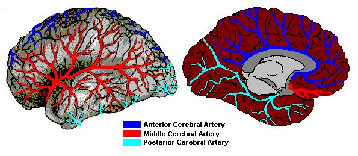
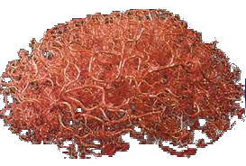

Neurovascular system
The lungs are the source of oxygen carried by the blood. Oxygen diffuses from the alveoli of the lungs into red blood cells, where oxygen molecules are bind to haemoglobine molecules (4 oxygen molecules for 1 haemoglobine molecule, and about 280 million Hd molecules per blood cell). The extraction of oxygen and glucose from the blood and the removal of waste carbon dioxide occur at the surface of capillaries. Capillaries are vessels comparable in size to blood cells (5 to 10 micro-meters).
Microcirculation
Conducting arteries of the brain are about 700 micro-meters (for comparison carotid or basilar arteries are about 4 to 5mm) and run along pial surface. In the cortex, they often run along sulci that delineate adjacent gyri or run across the gyral surface. From these conducting arteries, smaller arteries (150 to 200 micro-meters) branch and ramify on the cortical surface into precortical arteries (50 to 70 micro-meters), which in turn ramify into arterioles (30 to 40 micro-meters). According to Nonaka and collaborators (Nonaka et al., (2003). Microvasculature of the human cerebral meninges Neuropathology, 23, 129-135) conducting arteries suplly areas of 3.5x2mm whereas precortical arteries supply areas of 1x1mm.
The vascularisation density is observed where the highest concentrations of neural cell bodies are located. Thus, considerably less dense vascularisation is observed in the white matter than the grey matter.

Figure 1. Brain vascularization
Development of Vascular and Neuronal architectures
During development, axons can guide other axons and different types of vessels track together. However, it appears that axons can guide vessels and vis versa. "The mutual guidance is thus an elegant explanation for the alignment of nerves and vessels" (Carmeliet & Tessier-Lavigne, 2005, Nature 436, 193-200). Neurons send out a cable-like axon that migrates over large distance to reach its target. Leading the axon to its 'destination' is performed by a growth cone. Through cycles of expansion and contraction of filipodial extensions, the growth cone explores and reassesses its spatial environment and accurately selects a trajectory. In contrast, the vasculature arises through a hierarchy of local movements of endothelial cells. During initial vasculogenesis, a primitive labyrinth is formed. Next, during angiogenesis, vessels sprout off more side branches to colonize the avascular areas.
Large vessels and axons follow highly stereotyped anatomical patterns. The guidance of axons and endothelial cells is directed by specific guidance cues in the extracellular environment. Several of these cues attract or repel both vessels and axons.
Capillary networks are not stereotyped. The target nervous cells produce a nervous growth factor, thus appealing their innervations. The expression of the growth factor is down-regulated once cells receive appropriate electrical stimulation. Similarly, hypoxic tissue secretes an endothelial growth factor, thus attracting its vascularisation. The expression of the growth factor is down-regulated once cells receive appropriate oxygen supply.
The formation of capillary networks is achieved using common principles, even if the molecules involved are, at least in part, distinct. For both systems, sprouting requires the presence of growth factors and appropriate gradients of these factors.
Blood Flow
Blood flow parameters vary within the vascular system and are influenced by many physical and physiological factors, as for example diameters of vessels, density of red blood cells, blood pressure, oxygen/carbon dioxide rate. Whereas the blood flow velocity in cerebral arteries is about 40 cm/s, the velocity is highly reduced in precortical arteries and arterioles (10 to 250 mm/s) and even less in capillaries (1 mm/s). Small arteries have high resistance and thus oppose flow, helping to convert the pulsatile ejection of blood from the heart into a steady flow through the capillaries.
note:
blood flow = blood volume /blood flow velocity
blood flow = (pressure b - pressure a) / resistance (a and b being the extrema of a vessel)
Control of the blood flow
Changes in the blood flow that accompany increases in neural activity are believed to be initiated when neurons release substances that diffuse through the extracellular space. Such vasoactive substances cause the vessels to dilate and thus increase the flow. However, such effect can only be local and cannot be sufficient to regulate the blood flow that is controlled by precortical arteries located upstream and far from active neurons. A coordination of local changes and upstream regulation mechanisms is required. This coordination seem achieved by different molecules such as NO (nitric oxide), K+ or adenosine. (find out more on the fMRI BOLD page)
Such data put limits on the spatial extend of PET and fMRI data. While epicentre of the blood flow is located close to active neurons, arterioles dilatation and increase in the blood flow are located few millimetres distant.
What happens in the capillaries?
Once arterioles increase the blood flow, the capillaries are hyperperfused. One popular hypothesis was that a large number of capillaries are 'unused' and thus available to accept this increased flow, leading to an increased blood volume within the capillaries (capillary recruitment hypothesis). Recent studies have however failed to demonstrate such mechanism. Instead, individual capillaries tend to distend, i.e. to reduce their resistance, leading to an increased blood flow. This distension would, in the same time, increase the total surface of the local capillary bed, which could increase the transfer of oxygen and glucose to active neurons. Thus, the response of the capillary bed to increased blood flow from the arterioles is to increase the blood flow velocity with an unknown contribution to the decreased resistance. However, such increase in the velocity corresponds to an increased transit time which in turn decrease the likelihood for a Hd molecule to exchange its oxygen.